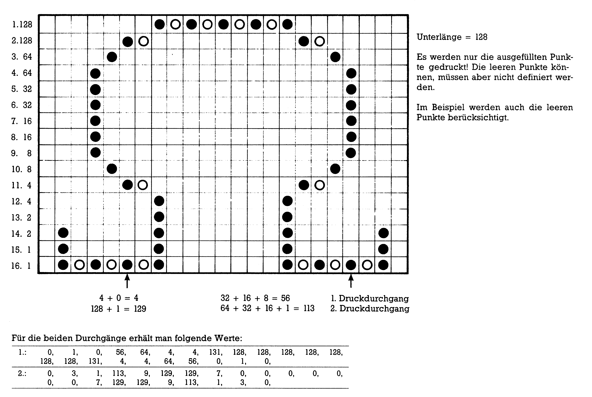
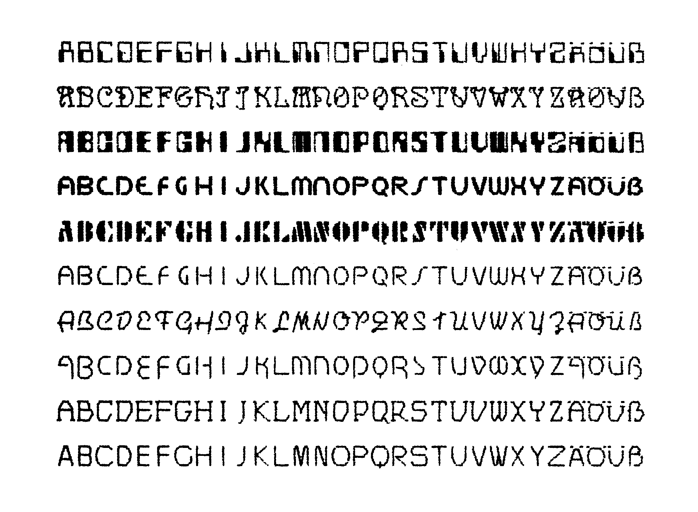

Kennen Sie Ihren Drucker? (Teil 6)
Diesmal geht es um selbstdefinierte Zeichen in NLQ-Qualität. Um die Erstellung eigener Zeichensätze komfortabel zu machen, bieten wir Ihnen einen Zeicheneditor für den Drucker Star-NL-10 als Listing zum Abtippen an.
Matrixdrucker haben im Gegensatz zu Typenraddruckern viele Vorteile wie zum Beispiel Einzelnadelansteuerung, frei definierbare Zeichensätze und nicht zuletzt eine wesentlich höhere Druckgeschwindigkeit. Allerdings hatten diese Drucker, bedingt durch das Druckprinzip, auch einen wesentlichen Nachteil. So konnten Matrixdrucker früher nur notdürftig für die Korrespondenz verwendet werden, da ihr Schriftbild in den meisten Fällen zu wünschen übrig ließ.
In letzter Zeit ist es den Matrixdruckern allerdings gelungen, immer mehr in die Domäne der Typenraddrucker (der Korrespondenzdruck) vorzudringen. Dies wurde durch die Entwicklung der sogenannten Near-Letter-Quality-Drucker (Beinahe Briefqualität, NLQ) erreicht.
Das Funktionsprinzip der NLQ-Schrift ist ebenso einfach wie genial. Normalerweise entstehen beim Drucken eines Zeichens zwischen den einzelnen Punktzeilen Zwischenräume, die mit bloßem Auge leicht zu erkennen sind. Bei der NLQ-Schrift wird dagegen jede Zeile zweimal gedruckt, wobei das Papier zwischen den beiden Druckgängen um einen halben Punkt weitertransportiert wird. Durch diese Drucktechnik wird erreicht, daß keine Zwischenräume zwischen den einzelnen Druckzeilen mehr zu erkennen sind. Man darf allerdings nicht verschweigen, daß bei diesem Verfahren die Druckgeschwindigkeit erheblich vermindert wird, da eine Zeile (mindestens) dreimal vom Druckkopf überfahren wird (1. Halbzeile drucken, Wagenrücklauf, 2. Halbzeile drucken). Erst bei neueren Druckern, die schon über 18 oder 24 Nadeln verfügen, tritt diese Geschwindigkeitsverminderung nicht mehr ein, da eine Zeile in einem einzigen Durchgang gedruckt wird. Diese Drucker sind dann in der Lage (fast) ohne Qualitätsabstriche in einer Geschwindigkeit zu drucken, die jeden (erschwinglichen) Typenraddrucker in den Schatten stellt.
Selbstdefinierte Zeichen
Drucker mit NLQ-Fähigkeit auszurüsten, gehört eigentlich schon zum Standard, so daß in vielen Druckern diese Schrift bereits integriert ist. Doch sicherlich ist bei vielen Besitzern von NLQ-Druckern schon einmal der Wunsch aufgekommen, über den im Drucker vorhandenen Zeichensatz hinaus, eigene Zeichen und Zeichensätze zu verwenden. Doch wie bringt man den Drucker dazu, die selbstentworfenen Zeichen zu drucken?
Im einzelnen sollen nun alle notwendigen Schritte dargestellt werden, die für den Entwurf eines einzelnen Zeichens notwendig sind. Der Entwurf und die Programmierung des Zeichens werden auf einem Star NL-10 vorgenommen (NLQ-Matrix: 23 Spalten/18 Zeilen). Leider ist es nicht möglich, eine universelle Anleitung für alle Drucker zu geben, da die Unterschiede von Modell zu Modell im allgemeinen zu groß sind (Zeichenmatrix, Ansteuerung, etc.).
Bevor dem Drucker mitgeteilt werden kann, wie das Zeichen aussieht, muß es zuerst einmal entworfen und in Daten-Byte umgewandelt werden. Doch wie entwirft man sein Zeichen am besten? Als Entwurfshilfe soll eine Matrix aus 23 Spalten und 16 Zeilen dienen. Die Zeilen werden dann so numeriert, wie es im Beispielentwurf zu sehen ist (Bild 1). In diese Matrix wird dann das gewünschte Zeichen (im Beispiel das Omega) eingetragen. Für jeden Punkt, der gesetzt werden soll, wird in der Matrix das entsprechende Kästchen ausgemalt. Hierbei muß unbedingt beachtet werden, daß von zwei benachbarten Punkten immer nur der linke gedruckt wird. Diese Eigenart ist drucktechnisch bedingt und läßt sich nicht umgehen. Die Ursache dieses Phänomens liegt in der Tatsache, daß sich benachbarte Punkte überlappen. Und beim Druck sich überlappender Punkte müßte der Druckkopf nach jedem gedruckten Punkt einen kleinen Rückschritt machen, um den nächsten Punkt drucken zu können. Dieses ständige Hin- und Herfahren des Druckkopfs hätte neben einem Geschwindigkeitsverlust auch eine erhebliche Strapazierung der Druckmechanik zur Folge.

Nachdem das Zeichen vollständig entworfen wurde, müssen die einzelnen Matrixspalten in Daten verwandelt werden, die der Drucker versteht. Bei dieser Umwandlung muß nach folgendem Schema vorgegangen werden. An der linken Seite der Matrix befindet sich in jeder Zeile eine Zahl. Diese Zahlen dienen zur Berechnung des Daten-Byte für jede einzelne Spalte. Da das Zeichen in zwei Durchgängen gedruckt wird, muß die Berechnung der Daten-Byte in zwei Abschnitten erfolgen. Das heißt, daß für den ersten Druckdurchgang nur die Punktzeilen mit ungeraden und für den zweiten Durchgang nur die Zeilen mit geraden Nummern betrachtet werden. Die Daten-Byte werden spaltenweise von links nach rechts aus den entsprechenden Zeilenwerten zusammengerechnet. Dabei wird für jeden in der jeweiligen Spalte gesetzten Punkt der Wert zum Daten-Byte addiert, der am linken Rand der Matrix in der zugehörigen Zeile steht. Nachdem für alle 23 Spalten die Daten-Bytes der ungeraden Zeilen errechnet und notiert wurden, wird die ganze Prozedur mit den geraden Zeilen wiederholt.
Unterlängen — kein Problem!
Für Zeichen mit Unterlänge, die tiefer als die normalen Zeichen gedruckt werden (z.B. g,p,q,y), gibt es ein eigenes Daten-Byte. Dieses Byte hat je nach gewünschtem Modus den Wert 0 oder den Wert 128. Für Zeichen mit Unterlänge steht der Wert 128, für normale Zeichen der Wert 0. Dieser Wert sollte auch neben den Daten-Bytes notiert werden.
Da die Theorie im allgemeinen immer etwas zäh und trocken ist, soll jetzt zur Veranschaulichung der Berechnung diese an zwei Beispielen durchgeführt werden. Bei der Berechnung des Daten-Byte für die sechste Spalte, ergibt sich für den ersten Druckdurchgang nur ein einziger Wert, nämlich 4 (Punkt in der 6. Spalte/11. Zeile). Für den zweiten Durchgang erhält man die zwei Werte 1 und 128 (6. Spalte/2. Zeile und 6. Spalte/16. Zeile). Diese beiden Werte müssen addiert werden (1+128=129) und ergeben dann das Daten-Byte für den zweiten Druckdurchgang. So erhält man also für die sechste Spalte die zwei Daten-Bytes 4 und 129. Als zweites Beispiel soll die 20. Spalte dienen. Hier findet man für den ersten Durchgang drei Werte, nämlich 32, 16 und 8. Diese werden wiederum addiert (32+16+8=56). Für den zweiten Durchgang ergeben sich vier Werte 64, 32, 16 und 1. Wiederum addiert ergibt das 113 (64+32+16+1=113). Somit erhält man für die 20 Spalte als erstes und zweites Daten-Byte 56 und 113.
Sind alle Daten-Byte berechnet und notiert, ergibt sich zusammen mit dem Unterlängen-Byte eine Kette von Daten, die nun an den Drucker gesandt werden muß. Zuerst muß dem Drucker allerdings mitgeteilt werden, daß die gesandten Daten für die Definition eines Zeichens verwendet werden sollen. Für diese Aufgabe ist der ESC&-Befehl zuständig. Die vollständige Syntax dieses Befehls lautet: CHR$(27) CHR$(38) CHR$(0) CHR$(n1) CHR$(n2) CHR$(m0)...CHR$(m46). Bei diesem Befehl steht n1 für das erste und n2 für das letzte zu definierende Zeichen. Diese beiden Werte geben den ASCII-Code der jeweiligen Zeichen an und können jeden Wert zwischen 32 und 127 annehmen. Soll nur ein einzelnes Zeichen definiert werden, so erhalten n1 und n2 den gleichen Wert. Bevor allerdings eine Definition von NLQ-Zeichen erfolgen kann, muß der Drucker auf NLQ umgeschaltet werden. Die NLQ-Betriebsart wird mit folgendem Code eingeschaltet: CHR$(27) CHR$(120) CHR$(49). Nach diesen Vorbereitungen kann mit der eigentlichen Übermittlung der Zeichendaten begonnen werden. Direkt auf die Befehlsfolge zum Anwählen der Zeichendefiniton folgen die einzelnen Daten-Byte (CHR$(m0)...CHR$(m46)). Hierbei muß folgende Reihenfolge eingehalten werden: Zuerst wird das Byte für die Unterlänge gesandt. Danach folgen die Bytes für den ersten Druckdurchgang, wobei die Daten-Byte, ausgehend von der linken Matrixspalte, der Reihe nach übermittelt werden. An die Bytes für den ersten Durchgang schließen sich die Daten-Bytes für den zweiten Durchgang an, wobei diese in genau derselben Reihenfolge an den Drucker gesandt werden wie beim ersten Durchgang. Insgesamt werden also 47 Daten-Bytes für die Definition eines Zeichens übermittelt (zwei Druckdurchgänge mit jeweils 23 Byte und ein Byte für die Unterlänge). Sollen mehrere Zeichen definiert werden, so hängt man die einzelnen Datenketten (47 Byte pro Zeichen) einfach aneinander und setzt für n1 und n2 die entsprechenden ASCII-Codes ein. Das Zeichen ist zwar jetzt definiert, aber bevor es ausgedruckt werden kann, muß zuerst noch der benutzerdefinierbare Zeichensatz eingeschaltet werden. Mit der Escape-Sequenz CHR$(27) CHR$(37) CHR$(49) CHR$(0) wird dies erreicht. Danach steht dem Ausdruck des definierten Zeichens eigentlich nichts mehr im Weg.
Zur besseren Veranschaulichung der Definition eines Zeichens, dient das Beispiel-Basic-Programm (Listing 1). In diesem Programm sind alle Steuersequenzen und Daten vorhanden, die zur Definition des Omega-Zeichens notwendig sind. Es folgt nun eine ausführliche Erklärung dieses Basic-Programms.
Zeile 130: Öffnen eines Druckerkanals.
140: NLQ-Schrift einschalten.
150: Befehlssequenz zum Kopieren des Zeichensatz aus dem Drucker-ROM ins Drucker-RAM.
160: Eigentliche Sequenz zur Definition eines Zeichens (in diesem Fall wird der Klammeraffe neu definiert; ASCII-Code =64).
170-200: Lesen der DATA-Zeilen und Übermittlung an den Drucker.
210: Anwählen des definierbaren Zeichensatzes.
220-270: Probeausdruck und Schließen des Druckkanals.
1000-1090: Daten des neuen Zeichens (Omega).
NLQ-Zeichen-Editor für den Star NL-10
Mit dieser ausführlichen Erläuterung des Programms und der Zeichendefinition müßte eigentlich jetzt jeder in der Lage sein, eigene Zeichen in NLQ-Qualität auf seinem Drucker zu programmieren. Die Erklärungen und die Beispiele beziehen sich zwar speziell auf den STAR NL-10, da aber viele Drucker nach dem gleichen oder einem ähnlichen Prinzip arbeiten, kann man das Schema der NLQ-Zeichendefinition nach dem Studium des Handbuchs leicht auf andere Modelle übertragen.
Alle, die über einen STAR NL-10 verfügen und Appetit auf NLQ-Zeichensätze bekommen haben, können allerdings aufatmen. Denn speziell für diesen Drucker wurde der Zeichen-Editor (Listing 2) entwickelt. Dieses Programm bietet dem Anwender die Möglichkeit, ganze Zeichensätze für den Drucker zu erstellen. Dabei entfällt natürlich jeglicher Zeichenentwurf auf dem Papier und jegliche mühsame Berechnung von Daten-Bytes. Der Editor ist mit einem Basic-Start versehen und wird mit RUN gestartet.
Im unteren Teil des Bildschirms erscheint dann folgendes Menü:
| <F1> | — | Unterlänge |
| <F2> | — | Clear Memory |
| <F3> | — | ASCII-Code + |
| <F4> | — | Automove |
| <F5> | — | ASCII-Code — |
| <F6> | — | Probedruck |
| <F7> | — | Load |
| <F8> | — | Save |
<F1>: Die Unterlänge dient dazu, die unteren zwei Zeilen der Matrix anzusprechen. Ist die Unterlänge eingeschaltet, wird das entsprechende Zeichen zwei Punktzeilen tiefer als die übrigen gedruckt.
<F2>: Dieser Menüpunkt löscht den gesamten Zeichensatz und ist daher mit entsprechender Vorsicht zu genießen.
<F3>: Blättert ein Zeichen vor.
<F4>: Der Automove dient dazu, den Cursor beim Setzen und Löschen von Punkten in die Richtung zu bewegen, in die man unmittelbar vorher den Cursor bewegt hat.
<F5>: Blättert ein Zeichen zurück.
<F6>: Sendet den Zeichensatz zum Drucker und druckt alle neuen Zeichen aus.
<F7>: Lädt einen Zeichensatz. Alle Zeichensätze erhalten automatisch die Kennung »DA/« als erste Zeichen des Filenamens. Hat man diesen Menüpunkt einmal aus Versehen angewählt, so kann man durch einen Druck auf die <STOP>-Taste wieder in den Editor zurückkehren.
<F8>: Speichern eines Zeichensatzes. Sonst wie Laden mit <F7>.
Der Matrix-Cursor wird mit den Cursor-Tasten bewegt. Mit <SPACE> löscht und mit der <*>-Taste setzt man Punkte. Mit <CLR/HOME> gelangt man in die obere, mit <SHIFT+CLR/HOME> in die untere linke Ecke des Editierfeldes.
Wenn man die <CBM>-Taste betätigt, gelangt man in ein Untermenü. Am unteren Bildschirmrand wird eine Menüleiste eingeblendet. Die einzelnen Buchstaben haben dabei folgende Bedeutung:
c: Dient zum Kopieren eines Zeichens. Es erscheint die Meldung »Copy what ?«. Daraufhin kann man mit <F3>/<F5> das gewünschte Zeichen auswählen. Mit <RETURN> bestätigt man seine Wahl, und die Meldung »Copy to where ?« erscheint. Wiederum wird das gewünschte Zeichen mit <F3>/<F5> ausgewählt (Zeichenmatrix zeigt jetzt nur noch das zu kopierende Zeichen). Mit <RETURN> wird dann schließlich das Zeichen kopiert. Ist man unbeabsichtigt in den Kopiermodus gelangt, so kann man ihn jederzeit mit <STOP> abbrechen.
l: Löscht das angezeigte Zeichen.
m: Mit Move kann man das Zeichen in der Matrix mit Hilfe der Cursor-Tasten scrollen. Abbruch mit <RETURN> oder <STOP>.
z: Dient zum schnellen Anwählen eines bestimmten Zeichens. Mit <F3>/<F5> wird das Zeichen ausgewählt und mit <RETURN> oder <STOP> angezeigt.
Das Untermenü kann mit <RETURN> oder <STOP> jederzeit verlassen werden.
Zur besseren Erkennung der einzelnen Modi wurde jedem eine bestimmte Rahmenfarbe zugeordnet.
Dunkelgrau: Editor/Eingabemodus
Grün: Load. Rot: Save
Hellblau: Untermenü
Gelb: Kopiermodus (c)
Hellgrün: Move-Modus (m)
Orange: Zeichensuch-Modus (z)
Zur Übermittlung von selbstdefinierten Zeichensätzen dient das Programm »TRANSFER« (Listing 3). Es wird mit SYS49152, "name",8,0 aufgerufen, wobei »name« dem Namen des Zeichensatzes entspricht. Die Routine »TRANSFER« kann von jedem Basic-Programm aus aufgerufen werden. Der gewünschte Zeichensatz wird unter das Basic-ROM geladen und an den Drucker gesandt. Dabei wird automatisch auf NLQ-Schrift umgeschaltet und der definierte Zeichensatz angewählt.
Zum Schluß noch ein Lichtblick für alle, die nur über eine bescheidene kreative Ader verfügen: Auf der Programmservice-Diskette befinden sich neben dem Editor auch noch zwölf Zeichensätze (Bild 2), die sofort zur Verfügung stehen. Und für all diejenigen, die viel Zeit haben oder die es nach noch mehr Zeichensätzen gelüstet, noch ein kleiner Tip: In einem Handbuch namens »Letraset« befinden sich sehr viele Zeichensätze, die alle komplett abgedruckt sind und die mit etwas Phantasie und viel Geduld in NLQ-Zeichensätze umgewandelt werden können. Diesen Katalog müßte man eigentlich in jedem größeren Schreibwarengeschäft erhalten. Sollte die Nachfrage im einem Geschäft keinen Erfolg bringen, so kann man bei der unten genannten Adresse Informationen über dieses Handbuch erhalten.
(Dieter Bayer/aw/sk)Info: Letraset Handbuch erhältlich bei: Letraset Deutschland GmbH, Postfach 630227, 6000 Frankfurt 63
